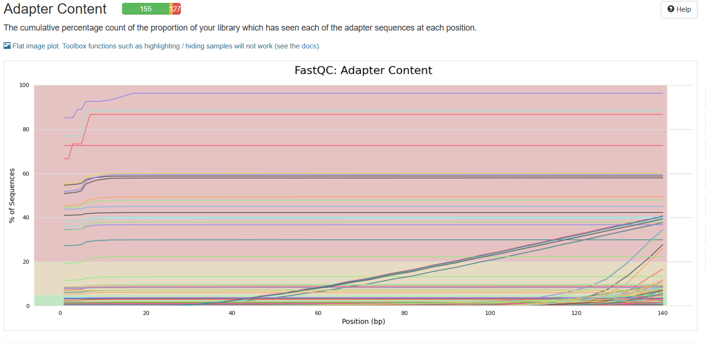
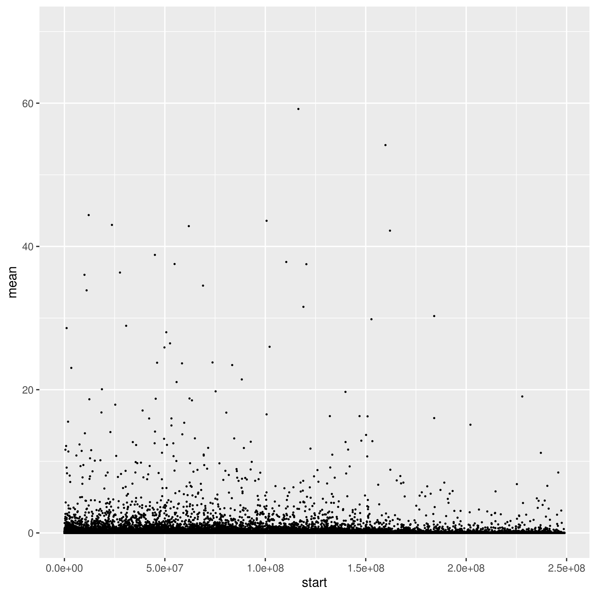

Coverage
This document houses the QC summary of the rawreads and alignment as part of UConn Genomic Data Analysis in Practice final project 2025.
Data Description and initial QC
97 raw reads of paired Illumina files from waste water samples from all 13 geo-locations were downloaded from NCBI under BioProject PRJNA765031. The preprocessing included running through fastqc v0.12.1 and multiqc v1.15. Trimming for adapter content using trimmomatic v0.39 using the TruSeq3-PE-2 adapter content file. This initial fastqc report Table 1 showed low numbers of sequence counts, with highest sample having 0.6M reads and about 30 samples rounding to 0M reads, a wide range of duplication (0.0% - 97.9%) duplication and a median %GC of 30.5. The median read length is 151bp.
|
|||||||||||||||||||||||||||||||||||||||||||||||||||||||||||||||||||||||||||||||||||||||||||||||||||||||||||||||||||||||||||||||||||||||||||||||||||||||||||||||||||||||||||||||||||||||||||||||||||||||||||||||||||||||||||||||||||||||||||||||||||||||||||||||||||||||||||||||||||||||||||||||||||||||||||||||||||||||||||||||||||||||||||||||||||||||||||||||||||||||||||||||||||||||||||||||||||||||||||||||||||||
|---|---|---|---|---|---|---|---|---|---|---|---|---|---|---|---|---|---|---|---|---|---|---|---|---|---|---|---|---|---|---|---|---|---|---|---|---|---|---|---|---|---|---|---|---|---|---|---|---|---|---|---|---|---|---|---|---|---|---|---|---|---|---|---|---|---|---|---|---|---|---|---|---|---|---|---|---|---|---|---|---|---|---|---|---|---|---|---|---|---|---|---|---|---|---|---|---|---|---|---|---|---|---|---|---|---|---|---|---|---|---|---|---|---|---|---|---|---|---|---|---|---|---|---|---|---|---|---|---|---|---|---|---|---|---|---|---|---|---|---|---|---|---|---|---|---|---|---|---|---|---|---|---|---|---|---|---|---|---|---|---|---|---|---|---|---|---|---|---|---|---|---|---|---|---|---|---|---|---|---|---|---|---|---|---|---|---|---|---|---|---|---|---|---|---|---|---|---|---|---|---|---|---|---|---|---|---|---|---|---|---|---|---|---|---|---|---|---|---|---|---|---|---|---|---|---|---|---|---|---|---|---|---|---|---|---|---|---|---|---|---|---|---|---|---|---|---|---|---|---|---|---|---|---|---|---|---|---|---|---|---|---|---|---|---|---|---|---|---|---|---|---|---|---|---|---|---|---|---|---|---|---|---|---|---|---|---|---|---|---|---|---|---|---|---|---|---|---|---|---|---|---|---|---|---|---|---|---|---|---|---|---|---|---|---|---|---|---|---|---|---|---|---|---|---|---|---|---|---|---|---|---|---|---|---|---|---|---|---|---|---|---|---|---|---|---|---|---|---|---|---|---|---|---|---|---|---|---|---|---|---|---|---|---|---|---|---|---|---|---|---|---|---|---|---|---|---|---|---|---|---|---|---|---|---|---|---|---|---|---|---|---|---|---|---|---|---|---|---|---|---|---|---|---|---|---|
Trimming results
The low read count a bit concerning but maybe characteristic of environmental sampling where the content is not viral rna cannot be guaranteed to have sufficient concentrations. The authors do report that of the 13 sampling locations most of the samples used were obtained from 5 sites, that is only 56 samples were utilized for the mutational analysis.
After adapter trimming, there are samples that failed to trim some adapter content with three samples reporting above 20% adapter content (figure 1) Figure 1, therefore a rerun of trimmomatic v0.39 was performed on the raw reads using the adapater content file NexteraPE-PE file instead. This is because majority of the failed files showed nextera transposase sequence as failing to successfully trim, as well as high (80%) polya content across all positions for example on Sample SRR16004567 Figure 2 . Since the polya contamination is on minority of samples, these samples are marked for caution as downstream analysis is implemented. Things to watch out for in downstream analysis include whether these samples 1) reported read count rounded to 0; 2)the location of the collection was included in the original paper mutational analysis; 3) the identified reads for these sample according toNCBI run browser on the samples for project PRJNA765031 e.g sample SRR16004567 identified reads are 3% compared to other samples that are above 90% e.g. sample SRR16004558 with 97.8% identified as viral and 89.19% coronavirus.

The fastqc results of the running trimmonatic with the adpater file changed to NexteraPE-PE, show that most samples have below 20% adapater content which is acceptable for further analysis.
Alignment
A concatenation of the both the human and SARS-CoV2 genomes was indexed using bwa-mem2 v.2.1. The concatenation is in lieu of active filtering of the raw waster reads against the human genome. This step will let the reads that are human align to the human genome and the viral to the viral genome, essentially filtering. The reads were the aligned with bwa-mem2, samtools v1.16.1 and samblasterv0.1.24. Samblaster was used to mark duplicate read pairs and flag them for elimination in downstream analysis.
Alignment QC
Alignment QC steps include using samtoolsv1.16.1 to calculate the statistics for each resultant bam file and mutliqc v1.9 to summarize these. Table 2 and Figure 3
|
||||||||||||||||||||||||||||||||||||||||||||||||||||||||||||||||||||||||||||||||||||||||||||||||||||||||||||||||||||||||||||||||||||||||||||||||||||||||||||||||||||||||||||||||||||||||||||||||||||||||||||||||||||||||||||||||||||||||||||||||||||||||||||||||||||||||||||||||||||||||||||||||||||||||||||||||||||||||||||||||||||||||||||||||||||||||||||||||||||||||||||||||||||||||||||||||||||||||||||||||||||||||||||||||||||||||||||||||||||||||||||||||||||||||||||||||||||||||||||||||||||||||||||||||||||||||||||||||||||||||||||||||||||||||||||||||||||||||||||||||||||||||||||||||||||||||||||
|---|---|---|---|---|---|---|---|---|---|---|---|---|---|---|---|---|---|---|---|---|---|---|---|---|---|---|---|---|---|---|---|---|---|---|---|---|---|---|---|---|---|---|---|---|---|---|---|---|---|---|---|---|---|---|---|---|---|---|---|---|---|---|---|---|---|---|---|---|---|---|---|---|---|---|---|---|---|---|---|---|---|---|---|---|---|---|---|---|---|---|---|---|---|---|---|---|---|---|---|---|---|---|---|---|---|---|---|---|---|---|---|---|---|---|---|---|---|---|---|---|---|---|---|---|---|---|---|---|---|---|---|---|---|---|---|---|---|---|---|---|---|---|---|---|---|---|---|---|---|---|---|---|---|---|---|---|---|---|---|---|---|---|---|---|---|---|---|---|---|---|---|---|---|---|---|---|---|---|---|---|---|---|---|---|---|---|---|---|---|---|---|---|---|---|---|---|---|---|---|---|---|---|---|---|---|---|---|---|---|---|---|---|---|---|---|---|---|---|---|---|---|---|---|---|---|---|---|---|---|---|---|---|---|---|---|---|---|---|---|---|---|---|---|---|---|---|---|---|---|---|---|---|---|---|---|---|---|---|---|---|---|---|---|---|---|---|---|---|---|---|---|---|---|---|---|---|---|---|---|---|---|---|---|---|---|---|---|---|---|---|---|---|---|---|---|---|---|---|---|---|---|---|---|---|---|---|---|---|---|---|---|---|---|---|---|---|---|---|---|---|---|---|---|---|---|---|---|---|---|---|---|---|---|---|---|---|---|---|---|---|---|---|---|---|---|---|---|---|---|---|---|---|---|---|---|---|---|---|---|---|---|---|---|---|---|---|---|---|---|---|---|---|---|---|---|---|---|---|---|---|---|---|---|---|---|---|---|---|---|---|---|---|---|---|---|---|---|---|---|---|---|---|---|---|---|---|---|---|---|---|---|---|---|---|---|---|---|---|---|---|---|---|---|---|---|---|---|---|---|---|---|---|---|---|---|---|---|---|---|---|---|---|---|---|---|---|---|---|---|---|---|---|---|---|---|---|---|---|---|---|---|---|---|---|---|---|---|---|---|---|---|---|---|---|---|---|---|---|---|---|---|---|---|---|---|---|---|---|---|---|---|---|---|---|---|---|---|---|---|---|---|---|---|---|---|---|---|---|---|---|---|---|---|---|---|---|---|---|---|---|---|---|---|---|---|---|---|---|---|---|---|---|---|---|---|---|---|---|---|---|---|---|---|---|---|---|---|---|---|---|---|---|---|---|---|---|---|---|---|---|---|---|---|---|---|---|---|---|---|---|---|---|---|---|---|---|---|---|---|---|---|---|---|---|---|---|---|---|
The raw reads show decent alignment scores, with majority of the reads mapping at >57% and only 16 out of 97 samples mapping below that; aligned with maximal error rate of 1.08%.
Coverage
Using bedtools v2.29.0, bamtools v2.5.1 and samtools 1.16.1, coverage of the alignement of the raw waste water reads to the concatanated reference genome (human + viral) was run. The per base coverage was visualized in R v 4.4.2 with required libraries tidyverse v2.0.0 and dplyr v2.5.0.
Coverage for all samples without a threshold set, resulted in a crowded plot, with exaggerated coverage Figure 4 . These might be due to the concatenation and the plot is capturing some of the human genome alignment.
Applying a cutoff of coverage 70% Figure 5, we see more uniform distribution across the samples.

The GC content was also visualized Figure 6. The GC content does appear quite uniform as well with most being between 25-75%.
Reference
This is created for UConn Genomic Data Analysis in Practice final project 2025. Based on data from the following published paper:
Herold, M., dHroul, A. F., May, P., Delogu, F., Wienecke-Baldacchino, A., Tapp, J., Walczak, C., Wilmes, P., Cauchie, H.-M., Fournier, G., & Ogorzaly, L. (2021). Genome Sequencing of SARS-CoV-2 Allows Monitoring of Variants of Concern through Wastewater. Water, 13(21), 3018. https://doi.org/10.3390/w13213018